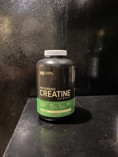

Below are a list of various products for aiding you with whatever fitness or health goal you are trying to achieve.
Recommended Clothing Brand for Fitness Apparel:
Gymshark
Creatine
Muscle Mass Supplement
This supplement is mean to increase your muscle mass by flooding
your muscles with a high quantities of water. This is different than
protien powder because it focuses on rapid muscle recovery instead of
supplmenting your body with protien enzymes to build muscle.

Gold Standard Protien Powder
Muscle Growth Supplement
This is a dietary supplement used to fasciliate muscle growth through the
digestion of protine enzymes. As opposed to creatine, which increases strength and muscle
mass by increasing exercise capacity, protien powder does so by stimulating increased muscle growth synthesis.
Green Tea Extract
Fat Burning Supplement
This supplement is simply extract from ginseng root that increases your body's thermal cycle temperature which allows you to burn
calories faster and more efficiently. It is only usefull when doing intense cardio exercises. Additionally, it contains a small amount
of caffiene (about 5 mg) that also help you burn calories. This product is taken as a capsule once in the morning and once before bed to
maintain a consistant thermal cycle.